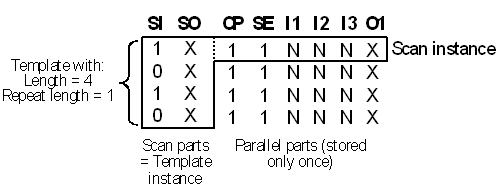

Scan Testing in SmarTest (Pin Scale)
SmarTest divides the scan vectors into two subvectors. One of these comprises the scan pins and will be called the scan part, the other, which comprises all the other pins, will be called the parallel part. The vectors in one scan section are supposed to have the same parallel parts or to repeat a short sequence of different parallel parts (in which case the length of the scan section must be a multiple of this sequence). The scan parts are stored for every vector, but the repeated sequence of parallel parts is stored only once per scan section.
Scan chains are modelled in SmarTest by templates. A template specifies the common properties of a collection of scan chains that are to be operated in parallel, namely
- the length of the chains, and thus also the scan sections,
- the repeat length, that is, the length of the sequence of parallel parts, and
- the scan input and output pins of the individual scan chains belonging to the collection.
A template does not contain any data, it only defines the structure of a scan section. The data of such a section is contained in a scan instance. A scan instance consists of a sequence of scan parts for the scan pins of the template and of a short sequence of parallel parts for the other pins. The sequence of scan parts is called a template instance. The following figure shows the application of these concepts to a scan section for the device shown in General Overview of Scan Testing:

Scan instances are identified by the template name and an instance number, which must be unique across patterns. Every template has its own numbering. Within the sequencer program, the execution of a scan instance is triggered by the SCAN sequencer instruction. The scan instance to be executed by this instruction is specified by template name and instance number. For examples of SCAN instructions, refer to the sequencer program in Translating the Scan Setup .
The waveform DC/DC power units for scan instances and those for parallel vectors are stored in different areas of the (pin specific) Vector Memory, which are called parallel area and scan area, respectively. Every pattern that calls a scan instance is associated with a scan area segment for every pin. These segments contain the scan instance data. The segments for the parallel pins are smaller than those for the scan pins, because the parallel parts are stored only once. This is one reason why the scan area is addressed by template and instance number, and not by an absolute address, as is the case with the parallel area (see General Overview of Pattern Structure and Parallel Vector Translation).
In order to display and edit instance data within the scan tool of SmarTest, you must define a frame. Frames are associated with a template and are primarily intended to display the data of one scan chain of the template. A frame can be restricted to a proper subsegment of the template. Thus, you must specify the offset of the frame within the template and the frame length in a frame definition.